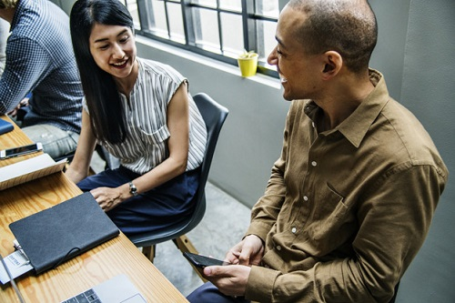
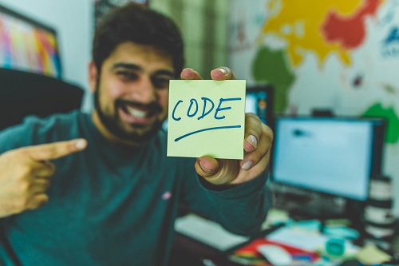
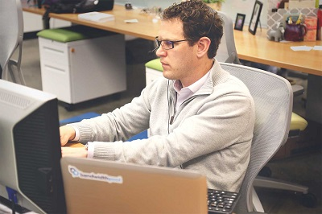
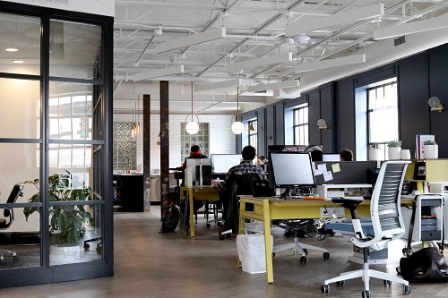
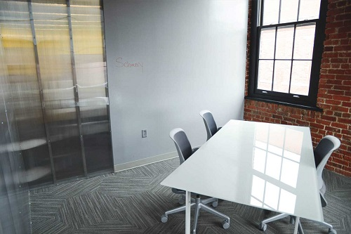
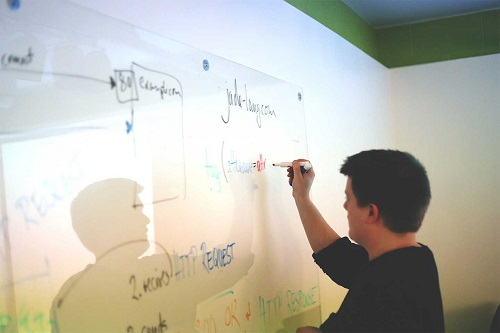
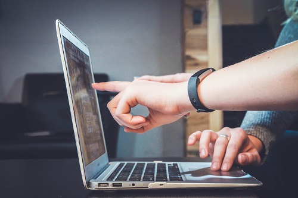
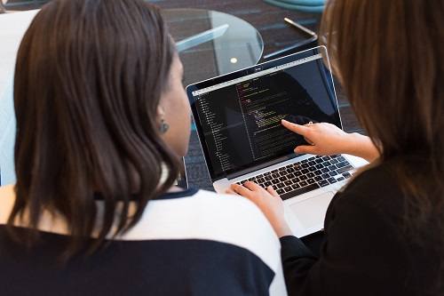

Adrian Ilie - Senior ManagerAndrei Munteanu - Graphic Designer

Cristina Drumea și Paul Ștefănescu - Voci Asistenți
Ana-Maria Albu - Professional Planner

Marian Petru - Web Developer

Marius Popescu - Web Developer
Sediul Firmei

Echipament modern și un mediu de lucru plăcut, astfel încât clienții noștri să beneficieze de cele mai bune servicii

Locuri unde clienții sunt invitați pentru discuții în vederea optimizării programului conform nevoilor lor

Ședințe zilnice în care se discută idei pentru îmbunătățirea programului se verifică funcționalitatea perfectă a programului
Clienți
Ioana:asiSTAR IT oferă o relație strânsă cu clienții săi, am avut o experiență foarte bună cu echipa

Mihai:la asiSTAR am găsit soluția pentru toate problemele de organizare, mi-a făcut viața mai ușoară

Mădălina:asistentul STAR a devenit cel mai bun prieten al meu, iar echipa este foarte implicată